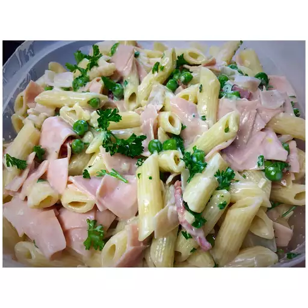

This rich pasta toss is great for everyday dinners or special occasions.
I can come home from work and throw this dish together in a half hour.
Bring a large pot of lightly salted water to a boil.
Cook rigatoni in the boiling water, stirring occasionally until cooked through but firm to the bite, about 13 minutes. Drain.
Meanwhile, place bacon in a large skillet and cook over medium-high heat, turning occasionally, until evenly browned, about 10 minutes.
Remove bacon with a slotted spoon, leaving drippings in pan; set bacon aside.
Cook and stir garlic in the remaining bacon grease over medium heat.
Add milk, cream cheese, and butter to skillet; stir until smooth.
Stir Parmesan cheese, peas, ham, and bacon into cream cheese mixture; cook until peas are heated through, about 5 minutes more.
Mix pasta into sauce to serve.